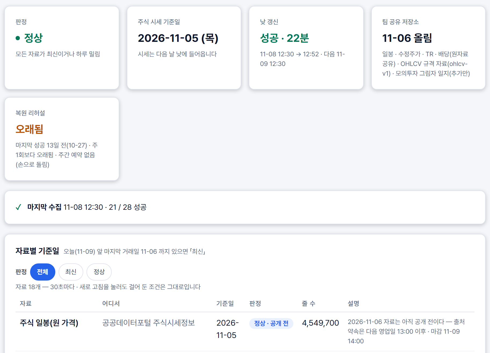
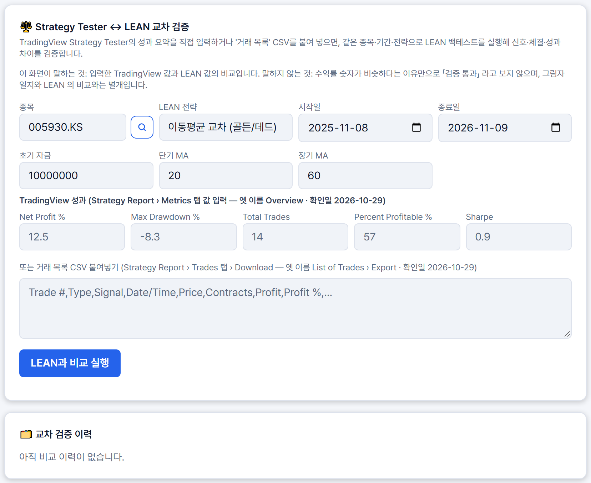

QURIOUS / 데이터 · 신호 근거 · 대사
신호를 믿어도 되는지,
확인하는 쪽을 맡았습니다
데이터 수집, 신호 근거, 같은 신호를 다시 돌려 맞춰 보는 대사.
잘하는 곳에서 배우고 비어 있는 곳을 채웠습니다. 못 한 것은 못 했다고 적었습니다.
2 · 배경
2차는 무엇을 담을지, 3차는 내 규칙을 믿어도 되는지를 다룹니다
2차 때는 어떤 자산을 얼마나 담을지를 다뤘습니다.
3차 과제는 나만의 투자 인디케이터를 만들고 성과를 검증하는 것입니다. 자기 규칙을 지표로 만들고, TradingView와 QuantConnect LEAN으로 다시 검증하고, 증권사 모의계좌까지 잇습니다.
3차가 이어 붙이는 길과 담당
| 내 규칙을 전략 카드와 지표로 만든다 | 신장환 님 |
| Pine으로 내보내 TradingView와 맞춰 본다 밑바탕인 데이터 수집과 신호 근거도 여기서 | 이동원 |
| 같은 규칙을 LEAN으로 다시 돌려 맞춘다 | 강민석 님 |
| 증권사 모의계좌에 주문을 잇는다 | 오준영 님 |
3 · 제가 한 일
제가 3차에서 한 일을 먼저 한 장으로 정리합니다
3차에서 맡은 것은 수집, 신호 근거, 같은 신호를 다시 돌려 맞추는 대사, 그리고 주담당인 TradingView와 Pine입니다.
오른쪽 표가 뒤에서 한 장씩 설명할 결과입니다. 숫자는 저장소에서 직접 센 값입니다.
팀원이 만든 것은 따로 구분했습니다. LEAN 체결 시점 구현은 강민석 님, 근거 문장은 신장환 님, 증권사 주문은 오준영 님입니다. 저는 그 사이를 맞춰 보는 쪽이었습니다.
3차에서 한 일 (제 몫만)
| 수집 | 매일 12:30 러너 21 → 28단계 (제가 6개) | 12 ~ 14장 |
| 신호 | 기록 종목 401 → 약 3,950 · 낡은 일봉 가드 | 15 ~ 18장 |
| 일지 | 규칙 · 코드 지문으로 판을 잠그는 그림자 일지 | 19 ~ 21장 |
| 대사 | 체결 시점 어긋남의 원인 분석 (구현은 강민석 님) | 22장 |
| TradingView | Pine 생성기 · 웹훅 받는 쪽 검증 | 25 ~ 27장 |
| 시험 | 새 시험 파일 149개 중 91개 | 23 · 24장 |
4 · 우리가 만든 것 · 한눈에 보는 구조
수집부터 증권사 모의 주문까지, 파란 칸이 제가 만든 것입니다
5 · 문제 정의
신호는 보이는데, 믿을 근거가 안 보인다는 말을 들었습니다
10월 27일에 모의투자를 직접 써 본 사용자가 세 가지를 짚었습니다.
최신인지 모른다
시그널이 최신 주가 기준인지 화면에서 확인할 수 없다.
이유를 설명 못 한다
매수·매도·관망의 근거가 안 보여서, 왜 사고파는지 설명할 수 없다.
위험 범위가 없다
얼마나 오르내릴 수 있는지 범위와 위험 설명이 없다.
코드를 확인해 보니 맞았습니다. 근거 문장은 응답에 이미 있는데 카드가 보여 주지 않았고, 기준일은 작은 회색 글씨로만 나왔습니다. 11월 2일에는 「주가는 실시간인데 분석은 이전 데이터라 어색하다」는 질문도 나왔습니다.
6 · 배경 근거
개인투자자는 눈에 띄는 정보에 끌리고, 근거는 길고 찾기 어렵다고 합니다
자본시장연구원은 개인투자자의 거래 자료를 분석해, 과잉확신이 과도한 거래를 부르고 투자 성과를 해친다고 봤습니다.
경험이 부족한 투자자일수록 눈에 띄고 접근하기 쉬운 정보에 더 기댔습니다. 그래서 투자자에게 주는 정보의 유형과 형식을 바꿔야 한다고 제안했습니다.
증권사 보고서를 덜 읽는 까닭 (30·40대 투자자 1,005명, %)
응답 항목 중 일부이며 복수 응답 여부는 확인하지 못했습니다.7 · 시장 조사
이미 있는 서비스는 규칙을 세우고, 시험하고, 주문까지 잇습니다
퀀터스와 젠포트, 인텔리퀀트, Composer는 노코드나 AI로 전략을 만들고 백테스트한 뒤 주문까지 잇습니다.
TradingView는 Pine으로 차트에서 바로 규칙을 시험하고, 스스로 1억 명의 트레이더가 쓴다고 소개합니다. QuantConnect LEAN은 같은 규칙을 독립 엔진에서 재현합니다.
공식 자료로 본 서비스 8곳의 기능
| 노코드 | AI 지원 | 백테스트 | 사용자 Pine | Python · LEAN | 주문 연동 | |
|---|---|---|---|---|---|---|
| 퀀터스 | ● | ● | ● | — | — | ● |
| 젠포트 | ● | △ | ● | — | — | ● |
| 인텔리퀀트 | ● | ● | ● | — | — | ● |
| Composer | ● | ● | ● | — | — | ● |
| TradingView | △ | △ | ● | ● | — | △ |
| QuantConnect | — | △ | ● | — | ● | ● |
| Portfolio Visualizer | △ | △ | ● | — | — | — |
| Portfolio123 | ● | ● | ● | — | △ | ● |
8 · 신호를 보여 주는 방식에서 배운 것
신호를 보여 주는 방식에서 세 가지를 배웠습니다
봉이 닫힌 뒤에 확정한다
TradingView는 알림을 봉이 닫힌 뒤 한 번만 보내라고 권합니다. Freqtrade와 QuantConnect LEAN도 봉이 완성될 때 계산합니다.
근거를 질문과 짧은 판정으로 보여 준다
Simply Wall St는 「업종·시장보다 주가가 출렁이는가?」 같은 질문 하나에 짧은 판정을 달고, 그 밑에 업종과 시장 평균을 나란히 둡니다.
지연을 숨기지 않는다
Finviz는 무료 시세에 「1분 지연」 표시를 늘 붙여 둡니다.
9 · 그래도 비어 있는 곳
같은 규칙인데 도구마다 결과가 달라질 수 있습니다
TradingView는 주문을 브로커 에뮬레이터로 시뮬레이션합니다. 차트에 표시만 하는 indicator()는 Strategy Report에 거래가 나오지 않는다고 도움말에 적혀 있습니다.
QuantConnect는 실거래와 표본 외 백테스트를 겹쳐 보고, 차이의 원인을 데이터와 모델링, 증권사로 나눕니다.
같은 규칙을 여러 환경에서 돌려 보고 차이의 이유까지 한 화면에서 설명해 주는 곳은, 우리가 읽은 공개 자료에서는 찾지 못했습니다. 다만 로그인과 유료 기능은 못 봐서 검증 전 가설입니다.
그래서 3차가 하기로 한 것
대사(對査)라고 부릅니다. 신호, 보유, 주문, 체결, 비용을 단계별로 맞춥니다.10 · 그런데 비어 있는 곳이 있었습니다
등급 한 줄에 근거가 묻힙니다
Investing.com은 「Strong Buy」를, Stockopedia는 0에서 100 사이 숫자 하나를 줍니다. 지표를 합치고 나면 어떤 근거가 켜졌는지 보이지 않습니다.
Morningstar는 한 걸음 더 나가, 매수와 매도를 검토할 가격대까지 서비스가 정해 줍니다.
Investing.com은 같은 날 페이지 위쪽 위젯과 FAQ 글의 결론이 서로 달랐던 적도 있었습니다.
솔직히 우리 신호도 규칙 점수를 더하는 방식이라 계산은 이 서비스들과 같은 계열입니다. 다른 점은 오른쪽 그림입니다.
같은 신호를 보여 주는 두 가지 방식
그림은 구조를 보여 주는 예시이며 실제 화면의 값이 아닙니다.11 · 설명을 붙이면 풀릴 줄 알았습니다
설명을 붙이면 오히려 더 따르게 됩니다
Bansal 연구진의 실험에서는 AI가 설명을 붙이자 AI가 틀렸을 때도 사람들이 더 따랐습니다. 반대 답까지 같이 설명했을 때는 덜 따랐습니다.
고지문도 마찬가지였습니다. 펀드 광고 실험에서 「과거 수익은 미래를 보장하지 않는다」 문구는 투자 의향을 바꾸지 못했습니다. 무엇이 틀릴 수 있는지 구체적으로 쓴 경고는 달랐습니다.
그래서 이렇게 했습니다
신호 옆에 반대로 본 까닭을 같은 크기로 둡니다.
고지문 한 줄 대신, 그 화면에서 무엇이 틀릴 수 있는지를 칸마다 적습니다.
목표가와 손절가는 서비스가 주지 않고 사용자가 정합니다.
12 · 우리가 만든 것 · 수집 28단계
수집 회차는 3차에 21단계에서 28단계로 늘었습니다
왜 이 순서인가. 받은 자료가 갖춰진 뒤에 계산하고, 계산이 다 끝난 뒤에 올립니다. 품질 검사는 일봉 단계 뒤에 둡니다 — 앞에 두었더니 10월 30일 첫 실측에서 ETF · 지수 거짓 경고 2건이 떴습니다.
12:30 회차: 11월 5일 43분 54초(단계 합 54분 40초) · 11월 6일 37분 16초(단계 합 37분 30초). 둘 다 강민석 님의 20번 단계(모의·KIS 대사)가 붙기 전 27단계 시절 값이라 28단계의 시간이 아닙니다.
13 · 우리가 만든 것 · 수집 관제 화면
수집이 잘 돌았는지는 데이터 관제 화면에서 봅니다

1 2 31 낮 갱신 — 걸린 시간
마지막 회차가 11-08 12:30 → 12:52, 성공 · 22분. 다음 회차는 11-09 12:30입니다.
2 마지막 수집 — 단계 상태
28단계 중 21개 성공. 실패나 경고가 있으면 줄 끝에 단계 이름이 붙는데, 이번 줄에는 없습니다.
3 자료별 기준일 — 얼마나 늦었나
자료 18개마다 기준일 · 판정 · 줄 수. 주식 일봉은 11-05까지, 판정은 「정상 · 공개 전」입니다. 11-06 자료는 출처가 다음 영업일 13:00 이후에 내놓습니다.
14 · 우리가 만든 것 ① 수집
수집을 줄이려고, 먼저 어디가 느린지 쟀습니다
10월 30일에 사용자 피드백으로, 수집을 더 잘게 쪼개 시간을 줄여 보라는 의견이 들어왔습니다. 처음 설계는 코어 22개로 병렬 처리하는 것이었습니다.
그런데 쟀더니 수정주가 단계 423초 가운데 311초가 계산이 아니라 DB에 쓰는 시간이었습니다. 그래서 병렬화는 접고 바뀐 행만 쓰도록 고쳤습니다. 검색 색인은 다른 단계와 겹쳐 돌리게 했습니다.
입력이 안 바뀐 날의 단계 시간 (초)
11월 5일 회차: 합친 시간 vs 실제
검색 색인(650초)이 뒤에서 같이 돌아 10분 넘게 겹쳤습니다. 11월 6일 회차는 색인이 20초뿐이라 단계 합 37분 30초, 실제 37분 16초로 거의 같았습니다.15 · 우리가 만든 것 ② 신호 · 기록 넓히기
신호 기록을 401종목에서 약 3,950종목으로 넓혔습니다
거래일마다 신호를 기록하는 종목과 하루 흐름
왜 이렇게 붙였나 신장환 님 파일(mtf_signals · signals_daily)을 고치지 않고 같은 함수를 부르는 새 단계로 만들면, 한쪽이 실패해도 다른 쪽 기록이 남습니다(설계서 3.1).16 · 우리가 만든 것 ② 신호 · 순위 화면
조건을 걸면 맞는 종목만 남겨 위에서부터 보여 줍니다
 1234
1234signal_explain은 신장환 님입니다. 순서는 추천이 아니라 기록된 종합 점수 순이라고 화면에 적혀 있습니다.17 · 우리가 만든 것 ② 신호 · 종목 근거
종목을 누르면 근거와 반대로 본 까닭이 함께 나옵니다
 123
123 4
4signal_explain이 만듭니다.
18 · 우리가 만든 것 ③ 겪은 문제: 낡은 일봉
낡은 일봉이면 신호 주문을 멈추도록 가드를 넣었습니다
get_candles 로 옮겼다(PR #537).19 · 우리가 만든 것 ④ 그림자 일지: 구조
그림자 일지는 이렇게 짜였습니다
20 · 우리가 만든 것 ④ 그림자 일지: 실제 출력
지금 일지는 판 1 · 45행이고 지문은 그대로입니다
21 · 우리가 만든 것 ④ 겪은 문제: 일지에 생긴 판 2
고친 코드가 봉인한 일지에 새 판을 만들었습니다
get_quant_indicators 본문에 신선도 코드를 넣어 지문이 9b646702ddac → 8e2a5e2b99e5. 일지가 새 판을 자동 등록한 것입니다.get_candles 래퍼로 옮김 · 판 2 삭제(DB 한 트랜잭션 + 원장 4파일) · 설명 메모 2건 · 시험 3건. 일지 코드에 지우는 함수는 없고, 삭제는 제가 직접 한 번 한 예외 작업입니다.status도 두 규칙 모두 판 1 · 지문 같음입니다.22 · 우리가 만든 것 ⑤ 겪은 문제: 체결 시점
체결가가 달랐던 이유는 시가와 종가의 차이였습니다
| 맞추기 전 9/1~10/30 · 일지 40행 | 맞춘 뒤 9/1~11/5 · 일지 44행 | |
|---|---|---|
| 신호(겹친 날 기준) | 40 / 40 | 41 / 41 |
| 보유 상태 | 5일 어긋남 | 44 / 44 |
| 체결 가격 | 최대 440.84bp | 12 / 12 · 최대 0.0bp |
fill_timing=next_open(대사에만, PR #534) · Docker 재대조23 · 우리가 만든 것 · 시험이 지키는 범위
자동 시험은 4,530건이고, 일곱 묶음에 나뉘어 있습니다
묶음별 시험 건수 — 합계 4,530건
막대는 11-09 에 묶음마다 pytest 수집 건수를 직접 센 값입니다. 주황은 그 묶음에서 실패한 시험(37건). 건수는 시험의 수이지 품질 보증이 아닙니다.11-09 전체 시험 결과
통과 4,462 · 실패 37 · 건너뜀 31 · 건너뜀은 통과로 세지 않음실패 37건의 내역
| Windows 환경 34 | KIS 복구 30 · proc_stats 4 — 11-05 에 변경 전 코드도 똑같이 실패 |
| 11-09 에 고침 3 | no_yahoo 2 · pipeline_profile 1 |
3차에 새로 생긴 시험 중 제 몫
파랑 = 이동원, 회색 = 팀원(오준영 · 신장환 · 강민석). 시험 파일은 경계 커밋 때 174개, 지금 323개.24 · 우리가 만든 것 ⑥ 겪은 문제: 시험 실패
시험이 수십 건 깨졌지만 제품 문제가 아니었습니다
11월 5일에 강민석 님이 WSL에서 전체 시험을 돌렸더니 수십 건이 실패하고 pytest가 중간에 멈췄습니다. 제 PC에서는 같은 시험이 통과해서 환경 문제로 봤습니다.
Node 버전이 12로 너무 낮았고, 멈춘 것은 제 시험이 os.name을 바꿔서 리눅스에서 경로를 만들지 못한 탓이었습니다. 그래서 시험 끝 요약에 Node 버전 경고를 넣고, 그 시험 네 곳은 Windows에서만 돌게 고쳤습니다. 제품 코드는 그대로입니다.
나머지 원인은 강민석 님이 직접 찾아 고쳤고, 다시 돌린 전체 시험이 통과했다고 보고했습니다.
제 PC의 전체 시험 (건)
전체 4,480건 중 실패 35건(주황), 건너뜀 31건(회색). 실패 네 파일은 변경 전 코드에서도 똑같이 실패했습니다. 34건은 Windows 환경 문제입니다. 남은 1건은 수수료 판정 시험으로, 같은 수수료율이어도 거래 총액이 다르면 「불일치」로 두는 현재 구현이 맞다고 오준영 님이 11월 6일 이슈로 확인했습니다. 시험 기대값을 맞추는 일은 강민석 님 담당입니다.강민석 님 WSL 재실행(보고)
전체 시험 통과(종료 코드 0). 별도 환경이 필요한 시험은 건너뛴 결과이고, 저는 재현하지 않았습니다. 수수료 판정 시험은 제 PC의 main에서 아직 실패합니다.
25 · 우리가 만든 것 ⑦ TradingView · 카드에서 Pine 코드로
카드가 Pine 코드가 되고, 숫자를 다시 읽어 맞춥니다
실제로 생성한 Pine 코드의 일부 왼쪽 숫자 = 전체 코드의 줄 · 줄 나누기는 표시용
| 1 | 카드 지문 카드 전체 → 2번 줄 |
| 2 | 기간 entry · exit 의 20 · 60 → 11 · 12번 줄 |
| 3 | 수량 max_position_pct 30 · risk_pct 1 → 16 · 17번 줄 |
| 4 | 손절 atr_period 14 · atr_mult 2 → 18 · 19번 줄, 손절선은 45번 줄 |
| 5 | 익절 take_rr 2 → 20번 줄, 익절선은 46번 줄 (손절 거리의 2배) |
| 6 | 수수료 · 슬리피지 · 시작 자본 카드에 없고 생성할 때 넣은 값 → 6번 줄 (슬리피지 10bp 는 1틱, 실효 14.3bp). 같은 줄의 process_orders_on_close 는 카드의 체결 시점(entry_mode)에서 옴 |
파랑 = 카드 칸 · 호박 = 카드에 없고 생성할 때 넣은 값. 시험 통과는 카드의 숫자와 코드의 숫자가 같다는 뜻입니다.
26 · 우리가 만든 것 ⑦ TradingView · 알림 받는 쪽
알림은 주문이 되기 전에 정해진 순서로 걸러집니다
아직 못 한 것 실제 TradingView 서버가 보낸 알림으로 받아 본 기록은 없습니다. 공개 HTTPS 주소가 있어야 하는데(설계서 7절 물음 8 · 8절), 지금까지는 흉내 요청과 일회용 DB 시험뿐입니다. 시연 계정으로 본 화면의 수신 신호 이력도 0건입니다(계정별 목록).
27 · 우리가 만든 것 ⑦ TradingView · 비교 화면
비교 화면은 셋이 나눠 만들었고, 이건 실행 전입니다

여기까지 확인했습니다
카드 숫자 = 코드 숫자(33) · 알림 받는 쪽 검증(41 + 13) · 화면 표시 시험(11)
이것은 못 했습니다
거래 목록 CSV 비교 · 실제 알림 수신 · 템플릿·산식 컴파일
28 · 여기서부터는 못 한 것입니다
신호가 맞는지는, 맞히지 못했습니다
신장환 님이 400종목, 138일에 걸친 5만 줄이 넘는 신호를 5거래일 뒤 실제 수익과 맞춰 봤습니다.
매수 신호의 적중률은 48.9에서 50.1%였습니다. 아무 날이나 뽑아도 오르는 비율 51.3%와 비슷하거나 낮았고, 신뢰도가 높다고 적중률이 오르지도 않았습니다.
그래서 저희 신호는 수익을 맞히는 신호가 아니라 「이 규칙이 켜졌다」는 기록이라고 말씀드립니다.
범위는 60분 · 일 · 주 신호, 5거래일 하나, 비용 제외입니다. 자동매매의 이동평균 교차 규칙은 이 대조에 없고, 같은 규칙은 기준 전략 110개 시도로 백테스트했습니다(합격 0).
5거래일 뒤 방향 적중률 (%)
막대는 0에서 시작합니다. 매수·매도 모두 기준선과 거의 차이가 없습니다.29 · 그 밖에 못 한 것과, 이어갈 길
못 한 것은 못 했다고 적고, 이어갈 길을 붙였습니다
일지가 짧고, 대사는 한 조건뿐
전진 기록은 10행이고 대사도 ma_cross 한 조건에서만 맞춰 봤습니다.
→ 기록이 쌓이면 구간별로 나눠 보이고, 카드 비중을 LEAN에 넘겨 다른 전략도 맞춰 봅니다.
시간봉이 좁다
코인은 1일과 1시간봉뿐이고, 국내 분봉은 학습용 60분과 5분입니다.
→ 1분봉으로 받아 나머지를 합쳐 만드는 방식을 11월 12일 뒤에 붙입니다.
신호를 실시간으로 다시 판단하지 못한다
한국투자증권 모의투자 API는 초당 1건이고 여러 종목 한 번에 조회도 지원하지 않아, 전 종목을 계속 갱신하기 어렵습니다. 실시간 시세는 제공사와 계약이 필요한 것으로 알고 있습니다.
→ 새로고침은 지금 가격만 붙이고, 전체 재판단은 설계부터 합니다.
수집은 들쭉날쭉하고, 종가 확정 시각은 모른다
일봉 단계가 558초, 941초, 730초, 662초로 흔들리는데 원인을 모릅니다. 증권사 일봉이 몇 시에 확정되는지도 아직 단정하지 못합니다.
→ 원인을 찾고, 공식 종가와 맞춰 본 뒤에 정합니다. 단계마다 성공 여부와 마지막 성공 시각을 남겨 관리자 화면에서 보이게 하는 것도 이어갈 길입니다.